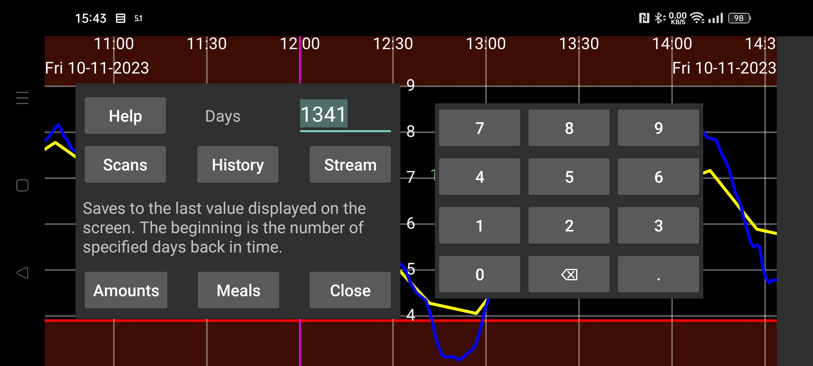

Экспортируйте данные из Juggluco в файл.
Приемы пищи сохраняются в формате html. Все остальные данные сохраняются в формате .tsv (значения, разделенные табуляцией). Его можно загрузить в такие программы, как LibreOffice Calc, Microsoft Excel, Mathematica или R. Это своего рода .csv с табуляциями вместо запятых, используемых для разделения элементов. Символы кодируются UTF8.
Значение столбцов можно узнать по адресу https://www.juggluco.nl/Juggluco/webserver.html.
Дни: Начиная с версии Juggluco 7.1.0, вы можете выбрать количество дней для сохранения. Дата окончания — это правая граница экрана. Таким образом, если вы просматриваете прошлые данные в Juggluco, экспортируются только старые данные (так же, как в левом среднем меню->Статистика).
Начиная с версии Juggluco 7.1.0, эти данные также можно получать через веб-сервер в Juggluco (Левое меню->Настройки->Веб-сервер), см. https://www.juggluco.nl/Juggluco/webserver.html.